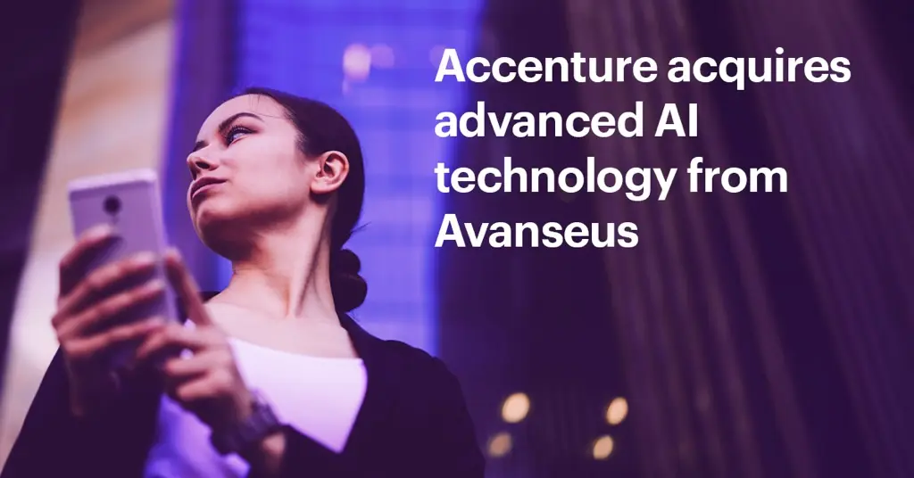

Accenture mua lại công nghệ AI tiên tiến để giúp các công ty viễn thông đẩy nhanh quá trình chuyển đổi mạng lưới tự động.
NEW YORK và SINGAPORE; ngày 24 tháng 2 năm 2026 - Accenture đã mua lại một giải pháp trí tuệ nhân tạo (AI) tiên tiến từ công ty sản phẩm điện toán đám mây Avanseus . Giải pháp này cung cấp các mô hình dự đoán, phát hiện bất thường và tối ưu hóa cho các hoạt động mạng phức tạp, đồng thời tăng cường khả năng nền tảng của Accenture trong việc mở rộng quy mô các mô hình AI/ML cho việc lập kế hoạch, kỹ thuật và tối ưu hóa mạng. Điều này sẽ giúp các khách hàng trong lĩnh vực viễn thông đẩy nhanh quá trình hướng tới mạng lưới tự động, cải thiện hiệu quả tài chính và tăng tính linh hoạt của dịch vụ. Công nghệ này sẽ đóng vai trò là nền tảng cơ bản để nhanh chóng phát triển và triển khai các giải pháp AI tác nhân tiên tiến như một phần của nền tảng mạng lưới nhận thức của Accenture.
Giải pháp Avanseus áp dụng trí tuệ nhân tạo (AI) tiên tiến để điều phối quá trình ra quyết định trong việc lập kế hoạch, tối ưu hóa và vận hành mạng lưới phức tạp, giúp các tổ chức biến sự phức tạp trong vận hành thành lợi thế cạnh tranh. Kiến trúc AI/ML nhận thức thống nhất của nó hỗ trợ chu kỳ đổi mới nhanh hơn và thời gian đưa sản phẩm ra thị trường ngắn hơn. Được thiết kế để tích hợp liền mạch với các nền tảng AI tác nhân của các nhà cung cấp dịch vụ điện toán đám mây quy mô lớn, nó cho phép triển khai hiệu quả các khả năng mạng tự động tiên tiến trong nền tảng mạng nhận thức của Accenture.
Khoản đầu tư này trực tiếp đáp ứng nhu cầu thị trường quan trọng trong ngành truyền thông, nơi chi phí vận hành cơ sở hạ tầng mạng đáng kể thúc đẩy nhu cầu về các giải pháp dựa trên trí tuệ nhân tạo (AI). Giải pháp của Avanseus cung cấp các mô hình tiên tiến để dự đoán, phát hiện bất thường và tối ưu hóa cần thiết cho sự chuyển đổi ngành này.
“Mạng lưới tự động cho phép các nhà mạng vượt ra khỏi hoạt động phản ứng thụ động, chủ động thúc đẩy tăng trưởng bằng cách cung cấp sự linh hoạt và hiệu quả cần thiết để phát triển mạnh trong một thị trường đầy thách thức,” ông Tejas Rao, Trưởng bộ phận Thực hành Mạng lưới Toàn cầu, Ngành Truyền thông, Truyền hình và Công nghệ Cao tại Accenture cho biết. “Việc tích hợp giải pháp Avanseus sẽ cho phép chúng tôi nhanh chóng phát triển và triển khai các giải pháp AI tác nhân tiên tiến, đẩy nhanh đáng kể hành trình của khách hàng hướng tới hoạt động mạng lưới hoàn toàn tự động và đưa các giải pháp đổi mới ra thị trường với tốc độ chưa từng có.”
Việc mua lại này càng củng cố thêm cam kết của Accenture trong việc dẫn đầu ngành về đánh giá hiệu suất mạng và tối ưu hóa hiệu năng, vốn là cốt lõi trong năng lực của chúng tôi đối với quá trình chuyển đổi mạng lưới quy mô lớn của các nhà cung cấp dịch vụ viễn thông toàn cầu.
Bhargab Mitra, CEO của Avanseus cho biết: “Việc Accenture mua lại giải pháp AI của chúng tôi đánh dấu một chương quan trọng tiếp theo cho công nghệ mà chúng tôi đã xây dựng. Điều này đảm bảo phạm vi toàn cầu và các nguồn lực cần thiết để thúc đẩy giai đoạn tiếp theo của đổi mới mạng lưới tự động.”
Các điều khoản của giao dịch không được tiết lộ.
Tuyên bố hướng tới tương lai
Ngoại trừ các thông tin và thảo luận lịch sử được đề cập trong bản thông cáo báo chí này, các tuyên bố trong bản thông cáo này có thể cấu thành các tuyên bố hướng tới tương lai theo nghĩa của Đạo luật Cải cách Tố tụng Chứng khoán Tư nhân năm 1995. Các từ như “có thể”, “sẽ”, “nên”, “có khả năng”, “dự đoán”, “mong muốn”, “kỳ vọng”, “dự định”, “kế hoạch”, “dự án”, “tin tưởng”, “ước tính”, “định vị”, “triển vọng”, “mục tiêu”, “chỉ tiêu” và các biểu thức tương tự được sử dụng để xác định các tuyên bố hướng tới tương lai này. Những tuyên bố này không phải là sự đảm bảo về hiệu suất trong tương lai cũng như không phải là lời hứa rằng các mục tiêu hoặc chỉ tiêu sẽ đạt được, và liên quan đến một số rủi ro, sự không chắc chắn và các yếu tố khác khó dự đoán và có thể khiến kết quả thực tế khác biệt đáng kể so với những gì được thể hiện hoặc ngụ ý. Những rủi ro này bao gồm, nhưng không giới hạn, các rủi ro rằng: giao dịch có thể không đạt được lợi ích dự kiến cho Accenture; Kết quả hoạt động kinh doanh của Accenture đã và có thể trong tương lai bị ảnh hưởng tiêu cực bởi các điều kiện kinh tế và địa chính trị biến động, tiêu cực hoặc không chắc chắn, cũng như ảnh hưởng của các điều kiện này đến hoạt động kinh doanh và mức độ hoạt động kinh doanh của khách hàng; hoạt động kinh doanh của Accenture phụ thuộc vào việc tạo ra và duy trì nhu cầu của khách hàng đối với các giải pháp và dịch vụ của công ty, bao gồm cả việc thích ứng và mở rộng các giải pháp và dịch vụ để đáp ứng những thay đổi liên tục về công nghệ và sản phẩm, và việc giảm đáng kể nhu cầu đó hoặc không thể đáp ứng được môi trường công nghệ đang phát triển có thể ảnh hưởng nghiêm trọng đến kết quả hoạt động kinh doanh của công ty; rủi ro và sự không chắc chắn liên quan đến việc phát triển và sử dụng AI, bao gồm cả AI tiên tiến, có thể gây hại cho hoạt động kinh doanh của công ty, làm tổn hại đến danh tiếng hoặc dẫn đến các hành động pháp lý hoặc quy định; nếu Accenture không thể đáp ứng nhu cầu của khách hàng trên toàn thế giới về nhân lực và kỹ năng, cũng như thu hút và giữ chân các chuyên gia có kỹ năng lãnh đạo mạnh mẽ, thì hoạt động kinh doanh của công ty, tỷ lệ sử dụng nhân lực chuyên nghiệp và kết quả hoạt động kinh doanh của công ty có thể bị ảnh hưởng tiêu cực nghiêm trọng; Accenture phải đối mặt với các rủi ro pháp lý, danh tiếng và tài chính từ bất kỳ sự thất bại nào trong việc bảo vệ dữ liệu của khách hàng và/hoặc công ty khỏi các sự cố bảo mật hoặc tấn công mạng; Các thị trường mà Accenture hoạt động có tính cạnh tranh rất cao, và Accenture có thể không cạnh tranh hiệu quả; nếu Accenture không quản lý và phát triển thành công mối quan hệ với các đối tác trong hệ sinh thái của mình hoặc không dự đoán và thiết lập các liên minh mới trong các công nghệ mới, kết quả hoạt động của công ty có thể bị ảnh hưởng tiêu cực; khả năng thu hút và giữ chân khách hàng và nhân viên của Accenture có thể phụ thuộc vào danh tiếng của công ty trên thị trường; lợi nhuận của Accenture có thể bị ảnh hưởng đáng kể do áp lực về giá nếu công ty không thể duy trì khả năng cạnh tranh.Nếu các chiến lược quản lý chi phí của công ty không thành công hoặc nếu công ty gặp phải sự thiếu hiệu quả trong việc cung cấp dịch vụ hoặc không đạt được các mục tiêu đã thỏa thuận hoặc các mức độ dịch vụ cụ thể; những thay đổi về mức thuế của Accenture, cũng như các cuộc kiểm toán, điều tra và thủ tục thuế, hoặc những thay đổi trong luật thuế hoặc trong cách giải thích hoặc thực thi luật thuế, có thể ảnh hưởng bất lợi đáng kể đến tỷ lệ thuế thực tế, kết quả hoạt động, dòng tiền và tình hình tài chính của công ty; kết quả hoạt động của Accenture có thể bị ảnh hưởng bất lợi đáng kể bởi sự biến động của tỷ giá hối đoái ngoại tệ; các nghĩa vụ nợ của Accenture có thể ảnh hưởng xấu đến hoạt động kinh doanh và tình hình tài chính của công ty; do hoạt động đa dạng về mặt địa lý và chiến lược tiếp tục tăng trưởng tại các thị trường trọng điểm trên toàn thế giới, công ty dễ bị tổn thương hơn trước một số rủi ro nhất định; nếu Accenture không thể quản lý các thách thức về tổ chức liên quan đến quy mô của mình, công ty có thể không đạt được các mục tiêu kinh doanh; Accenture có thể không thành công trong việc mua lại, đầu tư hoặc sáp nhập các doanh nghiệp, tham gia liên doanh hoặc thoái vốn; hoạt động kinh doanh của Accenture có thể bị ảnh hưởng bất lợi đáng kể nếu công ty phải chịu trách nhiệm pháp lý; Việc Accenture làm việc với các khách hàng chính phủ khiến công ty phải đối mặt với những rủi ro bổ sung vốn có trong môi trường hợp đồng chính phủ; hoạt động toàn cầu của Accenture khiến công ty phải tuân thủ nhiều yêu cầu pháp lý và quy định, đôi khi mâu thuẫn; nếu Accenture không thể bảo vệ hoặc thực thi quyền sở hữu trí tuệ của mình hoặc nếu các giải pháp hoặc dịch vụ của Accenture vi phạm quyền sở hữu trí tuệ của người khác hoặc công ty mất khả năng sử dụng quyền sở hữu trí tuệ của người khác, hoạt động kinh doanh của công ty có thể bị ảnh hưởng tiêu cực; Accenture có thể phải chịu sự chỉ trích và thông tin tiêu cực liên quan đến việc thành lập công ty tại Ireland; cũng như các rủi ro, sự không chắc chắn và các yếu tố khác được thảo luận trong mục “Yếu tố rủi ro” trong Báo cáo thường niên gần đây nhất của Accenture plc trên Mẫu 10-K và các tài liệu khác đã nộp hoặc cung cấp cho Ủy ban Chứng khoán và Giao dịch. Các tuyên bố trong thông cáo báo chí này chỉ có hiệu lực kể từ ngày chúng được đưa ra, và Accenture không có nghĩa vụ cập nhật bất kỳ tuyên bố hướng tới tương lai nào được đưa ra trong thông cáo báo chí này hoặc điều chỉnh các tuyên bố đó cho phù hợp với kết quả thực tế hoặc những thay đổi trong kỳ vọng của Accenture.Dòng tiền và tình hình tài chính; Kết quả hoạt động của Accenture có thể bị ảnh hưởng bất lợi đáng kể bởi sự biến động tỷ giá hối đoái; Các nghĩa vụ nợ của Accenture có thể ảnh hưởng xấu đến hoạt động kinh doanh và tình hình tài chính của công ty; do hoạt động đa dạng về mặt địa lý và chiến lược tiếp tục tăng trưởng tại các thị trường trọng điểm trên toàn thế giới, công ty dễ bị tổn thương hơn trước một số rủi ro nhất định; nếu Accenture không thể quản lý được những thách thức về tổ chức liên quan đến quy mô của mình, công ty có thể không đạt được các mục tiêu kinh doanh; Accenture có thể không thành công trong việc mua lại, đầu tư hoặc sáp nhập các doanh nghiệp, tham gia liên doanh hoặc thoái vốn; Hoạt động kinh doanh của Accenture có thể bị ảnh hưởng bất lợi đáng kể nếu công ty phải chịu trách nhiệm pháp lý; Việc Accenture làm việc với các khách hàng chính phủ khiến công ty phải đối mặt với các rủi ro bổ sung vốn có trong môi trường hợp đồng chính phủ; Hoạt động toàn cầu của Accenture khiến công ty phải tuân thủ nhiều yêu cầu pháp lý và quy định, đôi khi mâu thuẫn; nếu Accenture không thể bảo vệ hoặc thực thi quyền sở hữu trí tuệ của mình hoặc nếu các giải pháp hoặc dịch vụ của Accenture vi phạm quyền sở hữu trí tuệ của người khác hoặc công ty mất khả năng sử dụng quyền sở hữu trí tuệ của người khác, hoạt động kinh doanh của công ty có thể bị ảnh hưởng bất lợi; Accenture có thể phải đối mặt với những lời chỉ trích và thông tin tiêu cực liên quan đến việc thành lập công ty tại Ireland; cũng như các rủi ro, sự không chắc chắn và các yếu tố khác được thảo luận trong mục “Yếu tố rủi ro” trong Báo cáo thường niên gần đây nhất của Accenture plc trên Mẫu 10-K và các tài liệu khác đã nộp hoặc cung cấp cho Ủy ban Chứng khoán và Giao dịch. Các tuyên bố trong thông cáo báo chí này chỉ có hiệu lực kể từ ngày được đưa ra, và Accenture không có nghĩa vụ cập nhật bất kỳ tuyên bố dự báo nào được đưa ra trong thông cáo báo chí này hoặc điều chỉnh các tuyên bố đó cho phù hợp với kết quả thực tế hoặc những thay đổi trong kỳ vọng của Accenture.Dòng tiền và tình hình tài chính; Kết quả hoạt động của Accenture có thể bị ảnh hưởng bất lợi đáng kể bởi sự biến động tỷ giá hối đoái; Các nghĩa vụ nợ của Accenture có thể ảnh hưởng xấu đến hoạt động kinh doanh và tình hình tài chính của công ty; do hoạt động đa dạng về mặt địa lý và chiến lược tiếp tục tăng trưởng tại các thị trường trọng điểm trên toàn thế giới, công ty dễ bị tổn thương hơn trước một số rủi ro nhất định; nếu Accenture không thể quản lý được những thách thức về tổ chức liên quan đến quy mô của mình, công ty có thể không đạt được các mục tiêu kinh doanh; Accenture có thể không thành công trong việc mua lại, đầu tư hoặc sáp nhập các doanh nghiệp, tham gia liên doanh hoặc thoái vốn; Hoạt động kinh doanh của Accenture có thể bị ảnh hưởng bất lợi đáng kể nếu công ty phải chịu trách nhiệm pháp lý; Việc Accenture làm việc với các khách hàng chính phủ khiến công ty phải đối mặt với các rủi ro bổ sung vốn có trong môi trường hợp đồng chính phủ; Hoạt động toàn cầu của Accenture khiến công ty phải tuân thủ nhiều yêu cầu pháp lý và quy định, đôi khi mâu thuẫn; nếu Accenture không thể bảo vệ hoặc thực thi quyền sở hữu trí tuệ của mình hoặc nếu các giải pháp hoặc dịch vụ của Accenture vi phạm quyền sở hữu trí tuệ của người khác hoặc công ty mất khả năng sử dụng quyền sở hữu trí tuệ của người khác, hoạt động kinh doanh của công ty có thể bị ảnh hưởng bất lợi; Accenture có thể phải đối mặt với những lời chỉ trích và thông tin tiêu cực liên quan đến việc thành lập công ty tại Ireland; cũng như các rủi ro, sự không chắc chắn và các yếu tố khác được thảo luận trong mục “Yếu tố rủi ro” trong Báo cáo thường niên gần đây nhất của Accenture plc trên Mẫu 10-K và các tài liệu khác đã nộp hoặc cung cấp cho Ủy ban Chứng khoán và Giao dịch. Các tuyên bố trong thông cáo báo chí này chỉ có hiệu lực kể từ ngày được đưa ra, và Accenture không có nghĩa vụ cập nhật bất kỳ tuyên bố dự báo nào được đưa ra trong thông cáo báo chí này hoặc điều chỉnh các tuyên bố đó cho phù hợp với kết quả thực tế hoặc những thay đổi trong kỳ vọng của Accenture.Hoạt động kinh doanh của công ty có thể bị ảnh hưởng tiêu cực; Accenture có thể phải chịu sự chỉ trích và những thông tin tiêu cực liên quan đến việc thành lập công ty tại Ireland; cũng như các rủi ro, sự không chắc chắn và các yếu tố khác được thảo luận trong mục “Yếu tố rủi ro” trong Báo cáo thường niên gần đây nhất của Accenture plc trên Mẫu 10-K và các tài liệu khác đã nộp hoặc cung cấp cho Ủy ban Chứng khoán và Giao dịch. Các tuyên bố trong thông cáo báo chí này chỉ có hiệu lực kể từ ngày chúng được đưa ra, và Accenture không có nghĩa vụ cập nhật bất kỳ tuyên bố dự báo nào được đưa ra trong thông cáo báo chí này hoặc điều chỉnh các tuyên bố đó cho phù hợp với kết quả thực tế hoặc những thay đổi trong kỳ vọng của Accenture.Hoạt động kinh doanh của công ty có thể bị ảnh hưởng tiêu cực; Accenture có thể phải chịu sự chỉ trích và những thông tin tiêu cực liên quan đến việc thành lập công ty tại Ireland; cũng như các rủi ro, sự không chắc chắn và các yếu tố khác được thảo luận trong mục “Yếu tố rủi ro” trong Báo cáo thường niên gần đây nhất của Accenture plc trên Mẫu 10-K và các tài liệu khác đã nộp hoặc cung cấp cho Ủy ban Chứng khoán và Giao dịch. Các tuyên bố trong thông cáo báo chí này chỉ có hiệu lực kể từ ngày chúng được đưa ra, và Accenture không có nghĩa vụ cập nhật bất kỳ tuyên bố dự báo nào được đưa ra trong thông cáo báo chí này hoặc điều chỉnh các tuyên bố đó cho phù hợp với kết quả thực tế hoặc những thay đổi trong kỳ vọng của Accenture.
Giới thiệu về Accenture:
Accenture là một công ty hàng đầu về giải pháp và dịch vụ, giúp các doanh nghiệp hàng đầu thế giới tái cấu trúc bằng cách xây dựng nền tảng kỹ thuật số cốt lõi và khai thác sức mạnh của trí tuệ nhân tạo (AI) để tạo ra giá trị nhanh chóng trên toàn doanh nghiệp. Chúng tôi kết hợp tài năng của khoảng 784.000 nhân viên, các tài sản và nền tảng độc quyền, cùng với các mối quan hệ hệ sinh thái sâu rộng. Chiến lược của chúng tôi là trở thành đối tác tái cấu trúc được khách hàng lựa chọn hàng đầu và là nơi làm việc tuyệt vời nhất trên thế giới, tập trung vào khách hàng và được hỗ trợ bởi AI. Thông qua Dịch vụ Tái cấu trúc, chúng tôi kết hợp các khả năng của mình trong chiến lược, tư vấn, công nghệ, vận hành, Song và Industry X với chuyên môn sâu rộng trong ngành để tạo ra và cung cấp các giải pháp và dịch vụ cho khách hàng. Mục tiêu của chúng tôi là hiện thực hóa lời hứa về công nghệ và sự khéo léo của con người, và chúng tôi đo lường thành công bằng giá trị toàn diện 360° mà chúng tôi tạo ra cho tất cả các bên liên quan.